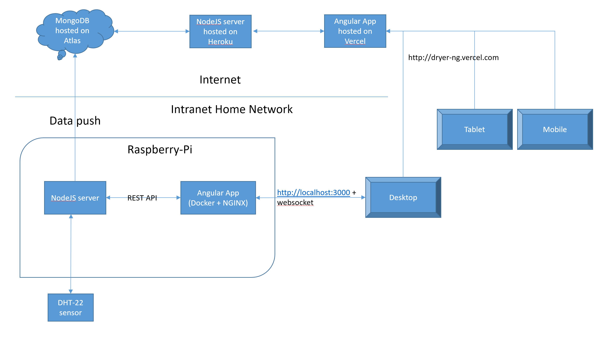

<mat-dialog-content>
    <mat-card>
        <mat-card-title>Full-Stack with Raspberry-Pi</mat-card-title>
        <mat-card-content>
            First I worked on the NodeJS and AngularJS applications directly on the Raspberry PI using Docker and NGINX.
            I was able to access the webpage locally in my intranet. Then I moved on to pushing the data to a cloud
            MongoDB and a hosted NodeJS and AngularJS app on the cloud so that I can access the dryer data anywhere in
            the world.
            <div class='div-image-container'>
                
            </div>
        </mat-card-content>
    </mat-card>
</mat-dialog-content>